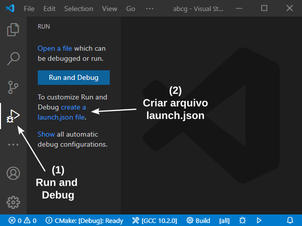

1.5 ABCg
Para facilitar o desenvolvimento das atividades práticas utilizaremos a biblioteca ABCg desenvolvida especialmente para esta disciplina.
ABCg permite a prototipagem rápida de aplicações gráficas interativas 3D em C++ capazes de rodar tanto no desktop com binário nativo, quanto no navegador com binário WebAssembly.
Internamente a ABCg utiliza a biblioteca SDL para gerenciar o acesso a dispositivos de entrada (mouse/teclado/gamepad) e saída (vídeo e áudio) de forma independente de plataforma, e a biblioteca GLEW para acesso às funções da API gráfica OpenGL. Além disso, a API do Emscripten é utilizada sempre que a aplicação é compilada para WebAssembly.
ABCg é mais propriamente um framework do que uma biblioteca, pois ela gerencia o fluxo de trabalho da aplicação. Nosso código deverá ser construído em torno da estrutura fornecida pela ABCg. Do ponto de vista do desenvolvedor, essa estrutura é apenas uma leve camada de abstração das APIs utilizadas. Por exemplo, é possível acessar diretamente as funções da API gráfica OpenGL. De fato, faremos isso na maior parte das vezes. Outras bibliotecas também utilizadas e que podem ser acessadas diretamente são:
- CPPIterTools: para o suporte a laços range-based em C++ usando funções do tipo
range,enumerateezipsimilares às da linguagem Python; - Dear ImGui: para gerenciamento de widgets de interface gráfica do usuário, tais como janelas, botões e caixas de edição;
- {fmt}: como alternativa mais eficiente ao stdio da linguagem C (
printf,scanf, etc) e iostreams do C++ (std::cout,std::cin, etc), e para formatação de strings com uma sintaxe similar às f-strings do Python; - Guidelines Support Library (GSL): para uso de funções e tipos de dados recomendados pelo C++ Core Guidelines;
- OpenGL Mathematics (GLM): para suporte a operações de transformação geométrica com vetores e matrizes;
- tinyobjloader: para a leitura de modelos 3D no formato Wavefront OBJ.
A seguir veremos como instalar e compilar a ABCg junto com um exemplo de uso.
Instalação
Em um terminal, clone o repositório do GitHub:
git clone https://github.com/hbatagelo/abcg.gitA release mais recente da ABCg também pode ser baixada como um arquivo compactado de https://github.com/hbatagelo/abcg/releases/latest.
No Windows, certifique-se de clonar/descompactar o repositório em um diretório cujo nome não contenha espaços ou caracteres especiais. Por exemplo, clone/descompacte em C:\cg em vez de C:\computação gráfica.
O repositório tem a estrutura mostrada a seguir. Para simplificar, os arquivos e subdiretórios .git* foram omitidos:
abcg
│ .clang-format
│ .clang-tidy
│ build.bat
│ build.sh
| build-vs.bat
│ build-wasm.bat
│ build-wasm.sh
| CHANGELOG.md
│ CMakeLists.txt
| DockerFile
│ LICENSE
│ README.md
│ runweb.bat
│ runweb.sh
│
└───abcg
│ │ ...
│
└───cmake
│ │ ...
│
└───examples
│ │ ...
│
└───public
│ ...Os arquivos .clang-format e .clang-tidy são arquivos de configuração utilizados pelas ferramentas ClangFormat e Clang-Tidy caso estejam instaladas.
Os arquivos build.* são scripts de compilação em linha de comando. Note que há scripts correspondentes com extensão .bat para usar no Prompt de Comando do Windows 2:
build.sh/build.bat: para compilar a ABCg e os exemplos em binários nativos usando o compilador padrão (no nosso caso, o GCC);build-wasm.sh/build-wasm.bat: similar aobuild.sh, mas para gerar binário em WebAssembly dentro do subdiretóriopublic;build-vs.bat: similar aobuild.bat, mas usando o compilador do Visual Studio 2022 ao invés do GCC do MSYS2.
O arquivo CMakeLists.txt é o script de compilação do CMake.
Os arquivos runweb.sh e runweb.bat podem ser usados para criar um servidor web local para servir o conteúdo de public.
Os subdiretórios são os seguintes:
abcgcontém o código-fonte da ABCg e suas dependências.cmakecontém scripts auxiliares de configuração do CMake.examplescontém um exemplo de uso da ABCg: o “Hello, World!”;publiccontém os códigos HTML para exibir o “Hello, World!” no navegador.
O “Hello, World!” pode usar tanto a API gráfica OpenGL (código-fonte em examples/opengl) quanto a API gráfica Vulkan (código-fonte em examples/vulkan).
Nesta disciplina usaremos o OpenGL em todas as atividades. Em particular, usaremos o OpenGL 3.3. Assim poderemos possível construir aplicações para desktop e web usando o mesmo código-fonte. Por este motivo, os scripts CMake da ABCg estão configurados para usar o OpenGL por padrão.
Compilando na linha de comando
Execute o script build.sh (Linux/macOS) ou build.bat (Windows) para iniciar o processo de configuração e construção da versão OpenGL do “Hello, World!”. A saída será similar a esta (o exemplo a seguir mostra a saída no Ubuntu):
-- The C compiler identification is GNU 11.2.0
-- The CXX compiler identification is GNU 11.2.0
-- Detecting C compiler ABI info
-- Detecting C compiler ABI info - done
-- Check for working C compiler: /usr/lib/ccache/cc - skipped
-- Detecting C compile features
-- Detecting C compile features - done
-- Detecting CXX compiler ABI info
-- Detecting CXX compiler ABI info - done
-- Check for working CXX compiler: /usr/lib/ccache/c++ - skipped
-- Detecting CXX compile features
-- Detecting CXX compile features - done
Using ccache
-- Found OpenGL: /usr/lib/x86_64-linux-gnu/libOpenGL.so
-- Found GLEW: /usr/include (found version "2.2.0")
-- Looking for pthread.h
-- Looking for pthread.h - found
-- Performing Test CMAKE_HAVE_LIBC_PTHREAD
-- Performing Test CMAKE_HAVE_LIBC_PTHREAD - Success
-- Found Threads: TRUE
-- Found SDL2: /usr/lib/x86_64-linux-gnu/libSDL2main.a;/usr/lib/x86_64-linux-gnu/libSDL2.so
-- Found SDL2_image: /usr/lib/x86_64-linux-gnu/libSDL2_image.so
-- Configuring done
-- Generating done
-- Build files have been written to: /home/ufabc/abcg/build
...
[100%] Linking CXX executable ../../bin/helloworld
[100%] Built target helloworldAo final, os binários estarão disponíveis no subdiretório build. A biblioteca estática estará em build/abcg/libabcg.a e o executável do exemplo “Hello, World!” estará em build/bin/helloworld.
Para testar, execute o helloworld. No Linux/macOS:
./build/bin/helloworld/helloworldNo Windows:
.\build\bin\helloworld\helloworld.exe | catNo Windows, a saída deve sempre ser redirecionada para cat ou tee. Se isso não for feito, nenhuma saída de texto será exibida no terminal. Isso se deve a um bug do MSYS2.
Observe o conteúdo de build.sh (build.bat contém instruções equivalentes):
#!/bin/bash
set -euo pipefail
BUILD_TYPE=${1:-Release}
CMAKE_EXTRA_ARGS=${2:-""}
# Reset build directory
rm -rf build
mkdir -p build && cd build
# Configure
cmake -DCMAKE_BUILD_TYPE="$BUILD_TYPE" "$CMAKE_EXTRA_ARGS" ..
# Build
if [[ "$OSTYPE" == "darwin"* ]]; then
# macOS
NUM_PROCESSORS="$(sysctl -n hw.ncpu)"
else
NUM_PROCESSORS="$(nproc)"
fi
cmake --build . --config "$BUILD_TYPE" -- -j "$NUM_PROCESSORS"A variável
BUILD_TYPEéReleasepor padrão, mas pode ser modificada passando a stringDebug,MinSizeRelouRelWithDebInfocomo primeiro argumento debuild.sh. A opçãoDebugouRelWithDebInfoé utilizada quando queremos gerar símbolos de depuração. O modoRelease(padrão) ouMinSizeReldevem ser usados quando queremos gerar um binário otimizado e sem arquivos de símbolos de depuração. Em particular,Releaseotimiza em favor do código mais rápido, enquantoMinSizeRelotimiza em favor do binário de menor tamanho.build.sh/build.battambém aceita um segundo argumento que corresponde a uma string a ser passada como argumento do CMake durante a configuração do projeto. Por exemplo, para compilar no modoReleasee com a API gráfica OpenGL podemos executarbuild.sh Release -DGRAPHICS_API=OpenGL(neste caso basta executarbuild.sh, pois essas já são as configurações padrão).Observe que o script apaga o subdiretório
buildantes de criá-lo novamente. Portanto, não salve arquivos dentro debuildpois eles serão removidos na próxima compilação!A geração dos binários usando o CMake é composta de duas etapas: a configuração (
cmake -DCMAKE_BUILD_TYPE=$BUILD_TYPE ..) e a construção (cmake --build . --config $BUILD_TYPE). A configuração gera os scripts do sistema de compilação nativo (por exemplo, arquivos Makefile ou Ninja). A construção dispara a compilação e ligação usando tais scripts. Todos os arquivos gerados na configuração e construção ficam armazenados no subdiretóriobuild.
Compilando no VS Code
Primeiramente, apague o subdiretório build caso você já tenha compilado a ABCg via linha de comando na seção anterior.
No VS Code, selecione o menu “File > Open Folder…” e abra a pasta abcg. Na seguinte janela, selecione “Yes, I trust the authors”:
No canto inferior direito da janela aparecerá uma notificação perguntando se você quer configurar o projeto. Selecione “Yes”.

Ao fazer isso, será feita uma varredura no sistema para identificar os compiladores e toolchains disponíveis. Uma lista dos “kits” de compilação encontrados aparecerá na parte superior da janela. O exemplo a seguir é o resultado exibido no Ubuntu:
Selecione um kit compatível, como o GCC 11.2 ou mais recente. Ao fazer isso, o CMake iniciará o processo de configuração do projeto. Esse processo gera, dentro de um subdiretório build, os arquivos que serão utilizados pelo sistema de construção nativo. Caso queira invocar manualmente a configuração do CMake, acesse a paleta de comandos (Ctrl+Shift+P) e digite a opção “CMake: Configure”.
Se aparecer uma notificação pedindo para configurar o projeto sempre que ele for aberto, selecione “Yes”:

Após o término da configuração, é possível que apareça uma outra notificação solicitando permissão para configurar o Intellisense. Selecione “Allow”.
Além disso, pode aparecer também uma notificação sobre o uso do arquivo compile_commands.json, como mostrado a seguir. Selecione “Yes” novamente:
O arquivo compile_commands.json é gerado automaticamente pelo CMake. Ele contém os comandos de compilação e o caminho de cada unidade de tradução utilizada no projeto. O IntelliSense (ou clangd) utiliza as informações desse arquivo para habilitar as referências cruzadas.
A construção dos projetos usando o CMake é feita em duas etapas:
- Configuração: consiste na geração dos scripts do sistema de compilação nativo (por exemplo, arquivos Makefile ou Ninja);
- Construção: consiste no disparo da compilação e ligação usando os scripts gerados na configuração, além da execução de etapas de pré e pós-construção definidas nos scripts dos arquivos
CMakeLists.txt.
Tanto os arquivos da configuração quanto os da construção (binários) são gravados no subdiretório build.
Geralmente a configuração só precisa ser feita uma vez e depois refeita caso o subdiretório build tenha sido apagado, ou após a alteração do kit de compilação, ou ainda após a alteração do build type (por exemplo, de Debug para Release). As informações de configuração ficam armazenadas em um arquivo CMakeCache.txt dentro de build.
Como indicado na figura abaixo, na barra de status há botões para selecionar o build type/configurar, selecionar o kit de compilação, e construir a aplicação. A opção de construir já se encarrega de configurar o projeto caso os arquivos de configuração ainda não tenham sido gerados.
Essas opções também estão disponíveis na paleta de comandos. Os comandos são:
- “CMake: Select Variant”: para selecionar um build type;
- “CMake: Select a Kit”: para selecionar um kit de compilação;
- “CMake: Configure”: para configurar o projeto usando o kit e o build type atual;
- “CMake: Build”: para construir o projeto.
- “CMake: Clean Rebuild”: para apagar as configurações anteriores do CMake, reconfigurar e reconstruir o projeto.
Os build types permitidos no CMake são:
Debugpara gerar binários não otimizados e com arquivos de símbolos de depuração. Esse é o build type padrão (ao contrário debuild.shebuild.bat, que usam o modoReleasepor padrão);RelWithDebInfopara gerar arquivos de símbolos de depuração com binários otimizados;Releasepara gerar binários otimizados e favorecer código mais rápido. Essa opção não gera os arquivos de símbolos de depuração;MinSizeRel, semelhante aoRelease, mas a otimização tenta gerar binário de menor tamanho.
Para compilar e gerar os binários, tecle F7 ou clique em “Build” na barra de status. O progresso será exibido na janela “Output” do CMake/Build. Se a construção terminar com sucesso, a última linha de texto da janela Output será:
[build] Build finished with exit code 0Os arquivos gerados na construção ficam armazenados no subdiretório build, da mesma forma como ocorre na compilação via linha de comando.
Para testar, abra um terminal e execute ./build/bin/helloworld/helloworld (Linux/macOS) ou .\build\bin\helloworld\helloworld.exe (Windows).
A configuração do CMake gerada a partir do VS Code não é necessariamente a mesma gerada usando os scripts de linha de comando: o compilador pode ser diferente, ou o build type pode ser diferente.
Se em algum momento você construir o projeto via linha de comando usando os scripts .sh ou .bat e depois quiser construir pelo editor, apague o subdiretório build antes de retornar ao VS Code. Isso forçará uma nova configuração do CMake e evitará erros de incompatibilidade entre as configurações.
Na primeira vez que um arquivo com extensão .cpp for aberto no editor, algumas notificações poderão aparecer. Experimente abrir, por exemplo, examples\helloworld\main.cpp. Se a extensão clangd foi instalada como sugerido na seção 1.4, a caixa de mensagem a seguir será exibida. Selecione “Install”.
A seguinte mensagem também poderá aparecer. Neste caso, selecione “Disable IntelliSense”:
Ao final dessas configurações, reinicie o editor. Isso pode ser feito rapidamente selecionando a opção “Developer: Reload Window” da paleta de comandos.
Depurando no VS Code
Podemos depurar facilmente nossas aplicações com GDB ou LLDB usando a interface do VS Code.
Após construir um projeto com build type Debug ou RelWithDebInfo, devemos abrir um de seus arquivos com extensão .cpp. Isso é necessário para fazer com que o VS Code identifique que queremos configurar a depuração de um projeto em linguagem C++. Por exemplo, para configurar a depuração do projeto “Hello, World!”, abra o arquivo examples\helloworld\main.cpp.
Selecione a opção “Run and Debug” na barra de atividades (Ctrl+Shift+D). Em seguida, clique na opção “create a launch.json file”:

Se aparecer um drop-down list de seleção do ambiente de depuração, selecione “C++ (GDB/LLDB)”. Isso criará o arquivo launch.json. O arquivo também será aberto no editor.

Copie e cole em launch.json o conteúdo exibido a seguir. Este é uma exemplo para depurar o “Hello, World!” no Linux ou macOS usando o GDB. Um exemplo de configuração para o Windows é mostrado mais adiante:
{
"version": "0.2.0",
"configurations": [
{
"name": "(gdb) Launch",
"type": "cppdbg",
"request": "launch",
"program": "${workspaceFolder}/build/bin/helloworld/helloworld",
"args": [],
"stopAtEntry": false,
"cwd": "${fileDirname}",
"environment": [],
"externalConsole": false,
"MIMode": "gdb",
"setupCommands": [
{
"description": "Enable pretty-printing for gdb",
"text": "-enable-pretty-printing",
"ignoreFailures": true
},
{
"description": "Set Disassembly Flavor to Intel",
"text": "-gdb-set disassembly-flavor intel",
"ignoreFailures": true
}
]
}
]
}Observe que o valor da chave program aponta para o executável do projeto: ${workspaceFolder}/build/bin/helloworld/helloworld.
${workspaceFolder} é uma variável pré-definida do VS Code que contém o caminho da pasta do projeto. Consulte a documentação para informações sobre outras variáveis disponíveis.
A listagem a seguir mostra um exemplo de launch.json para depurar o “Hello, World!” no Windows usando o GDB do MSYS2:
{
"version": "0.2.0",
"configurations": [
{
"name": "(gdb) Launch",
"type": "cppdbg",
"request": "launch",
"program": "${workspaceFolder}/build/bin/helloworld/helloworld.exe",
"args": [],
"stopAtEntry": false,
"cwd": "${workspaceFolder}",
"environment": [],
"externalConsole": false,
"MIMode": "gdb",
"miDebuggerPath": "C:\\msys64\\mingw64\\bin\\gdb.exe",
"setupCommands": [
{
"description": "Enable pretty-printing for gdb",
"text": "-enable-pretty-printing",
"ignoreFailures": true
},
{
"description": "Set Disassembly Flavor to Intel",
"text": "-gdb-set disassembly-flavor intel",
"ignoreFailures": true
}
]
}
]
}Veja que o valor da chave miDebuggerPath contém o caminho completo do GDB, que é C:\msys64\mingw64\bin\gdb.exe supondo que o MSYS2 tenha sido instalado em C:\msys64.
O valor da chave externalConsole pode ser modificado para true caso você prefira que um novo terminal seja aberto durante a depuração. Consulte a documentação sobre depuração para informações sobre outras opções e informações gerais sobre como depurar código no editor.
Após modificar o arquivo launch.json, selecione novamente a opção “Run” na barra de atividades ou aperte F5 para iniciar o programa no modo de depuração.
Reedite o arquivo launch.json sempre que mudar o nome do executável que você queira depurar.
No VS Code para Windows, configure o terminal padrão para “Command Prompt” no lugar de “PowerShell”, uma vez que nossos scripts são compatíveis apenas com o Prompt de Comando. Para fazer isso, abra a paleta de comandos (Ctrl+Shift+P), acesse o comando “Terminal: Select Default Profile” e então selecione “Command Prompt”.
Compilando para WASM
Podemos compilar as aplicações ABCg para WebAssembly (WASM) de modo a executá-las diretamente no navegador. A construção é feita via linha de comando usando o toolchain Emscripten. Acompanhe a seguir como construir o “Hello, World!” para WASM e como testá-lo no navegador:
- Em um terminal (shell ou Prompt de Comando), ative as variáveis de ambiente do Emscripten (script
emsdk_env.sh/emsdk_env.batdo SDK). Após isso, o compiladoremccdeverá estar visível noPATH; - No diretório
abcg, executebuild-wasm.sh(Linux/macOS) oubuild-wasm.bat(Windows). Isso fará com que o CMake inicie a configuração do projeto e a construção dos binários. Os arquivos resultantes serão gravados emabcg/public. Em nosso caso, esses arquivos sãohelloworld.data(arquivo de dados/assets),helloworld.js(arquivo JavaScript) ehelloworld.wasm(binário WebAssembly); - Execute o script
runweb.sh(Linux/macOS) ourunweb.bat(Windows) para rodar um servidor web local. O conteúdo depublicficará disponível em http://localhost:8080/; - Abra a página http://localhost:8080/helloworld.html que chama o script
helloworld.jsrecém-criado. A página HTML não faz parte do processo de construção e foi criada previamente.
O resultado será semelhante ao exibido a seguir: uma aplicação mostrando um triângulo colorido e uma caixa de diálogo com alguns controles de interface. A pequena janela de texto abaixo da janela da aplicação é uma área de texto em HTML que mostra o conteúdo do terminal. Aqui, são exibidas algumas informações sobre o OpenGL (versão utilizada, fornecedor do driver, etc).
O subdiretório public contém, além do helloworld.html:
full_window.html: para exibir o “Hello, World!” ocupando a janela inteira do navegador;full_window_console.html: idêntico ao anterior, mas com a sobreposição das mensagens do console na tela.
Nos próximos capítulos veremos como construir novas aplicações usando a ABCg.
Revisão de C++
Se você está mais habituado com programação em C ou C++ anterior ao C++11, o código das atividades da disciplina usando a ABCg poderá parecer pouco familiar. Revisaremos nesta seção alguns dos conceitos de C++ que podem gerar dúvidas em programadores que vieram da linguagem C, como a conversão explícita de tipos usando named casts, inicialização uniforme com {} e uso da palavra-chave auto. A aplicação desses conceitos segue as boas práticas de programação indicadas no C++ Core Guidelines e são seguidas em todos os códigos de atividades da disciplina.
Aproveite as primeiras semanas de aula para se familiarizar com os conceitos do chamado “C++ moderno” (C++11 em diante). Isso facilitará o entendimento do código da ABCg nos próximos capítulos.
Uma referência rápida (cheatsheet) ao C++ moderno está disponível em https://github.com/AnthonyCalandra/modern-cpp-features.
Uma excelente introdução ao C++ é o A Tour of C++, de Bjarne Stroustrup. Há também recursos gratuitos como os sites learncpp.com e tutorialspoint.com.
A documentação da Microsoft sobre C++ é uma opção em português. Há uma referência sobre a linguagem C++ e sobre a biblioteca C++ padrão.
Consulte também o C++ Core Guidelines para ficar a par das boas práticas de programação.
Uma referência mais completa e aprofundada da linguagem está disponível em cppreference.com. Algumas partes estão traduzidas para o português.
Named casts
Observe os seguintes exemplos de conversões explícitas de tipos (casts) usando a sintaxe tradicional oriunda da linguagem C:
int a = (int)7.9; // double para int
float b = (float)1 / 3; // int para float
unsigned *pa = (unsigned *)&a; // int* para unsigned*
void foo(Base *b) {
Derived *pd = (Derived *)b; // Base* para Derived*
// ...
}Estes casts “estilo C” têm uma sintaxe concisa, mas nem sempre traduzem de forma clara a intenção do programador. Além disso, a conversão é feita por conta e risco do programador. Não há verificação da validade da conversão, por exemplo, na conversão de Base* (ponteiro de uma classe base) para Derived* (ponteiro para uma classe derivada de Base).
C++ procura tornar as conversões explícitas mais expressivas e seguras através de quatro tipos de casts chamados de named casts:
static_castpara conversões entre tipos básicos cuja validade pode ser verificada em tempo de compilação (por exemplo,floatparainte vice-versa);const_castpara conversões entre tipos de diferentes qualificações (por exemplo, deint constparaint);reinterpret_castpara conversões entre tipos representados por diferentes padrões de bits na memória (por exemplo,int*parachar*);dynamic_castpara conversões de ponteiros e referências a objetos com polimorfismo dinâmico.
Os exemplos anteriores podem ser escritos assim com named casts:
int a = static_cast<int>(7.9); // double para int
float b = static_cast<float>(1) / 3; // int para float
unsigned *pa = reinterpret_cast<unsigned *>(&a); // int* para unsigned*
void foo(Base *b) {
// Não compila se Base não for uma classe polimórfica
Derived *pd = dynamic_cast<Derived *>(b); // Base* para Derived*
// ...
}A sintaxe é mais verbosa, mas a intenção do programador fica mais clara e o código torna-se mais seguro. Por exemplo, dynamic_cast retorna nulo se b (ponteiro para Base) não puder ser convertido para Derived* (por exemplo, se o objeto apontado por b é de uma classe incompatível com Derived). Esse erro passaria despercebido com o cast estilo C.
O ideal é usarmos a menor quantidade possível de casts. Em geral só precisaremos usar static_cast, e reinterpret_cast nas atividades do curso. Entretanto, alguns trechos dos códigos das atividades vão um pouco mais além e seguem a diretriz Pro.safety do C++ Core Guidelines. Essa diretriz recomenda o uso de gsl::narrow_cast e gsl::narrow no lugar de static_cast para conversões com estreitamento:
gsl::narrow_casté o mesmo questatic_cast.gsl::narrowé o mesmo questatic_castquando não há perda de informação na conversão. Se houver perda de informação, ocorre um erro de compilação.
Conversões com estreitamento são aquelas em que existe a possiblidade de perda de informação (por exemplo, float para int, ou double para float). Considere o seguinte exemplo de substituição de static_cast por gsl::narrow em uma conversão com estreitamento:
// float x = static_cast<float>(7.9); // Antes: OK
float x = gsl::narrow<float>(7.9); // Depois: intenção mais claraPoderíamos usar static_cast, mas o uso de gsl::narrow deixa nossa intenção mais clara: esperamos que a conversão de 7.9 (um double) para float não perca informação. Afinal, float tem precisão suficiente para representar uma casa decimal. Se por algum motivo houver perda de informação, gsl::narrow gerará um erro de compilação e então saberemos que algo está errado3.
Agora considere o seguinte exemplo de substituição de static_cast por gsl::narrow_cast:
// int x = static_cast<int>(7.9f); // Antes: OK
int x = gsl::narrow_cast<int>(7.9f); // Depois: intenção mais claraNesse caso também poderíamos usar static_cast, mas gsl::narrow_cast deixa nossa intenção mais clara: esperamos que a conversão de 7.9f (um float) para um int perca informação. Afinal, a parte fracionária será perdida. gsl::narrow_cast indica que estamos ciente dessa perda e que isso não é um problema para nós.
Em resumo, em conversões com estreitamento, isto é, com possível perda de informação, o uso de gsl::narrow e gsl::narrow_cast mostra melhor a intenção do programador. Ademais, de nossa parte, faz com que tenhamos que pensar melhor se estamos usando o static_cast corretamente.
Inicialização uniforme
O código das atividades do curso usam inicialização uniforme, que consiste no uso de {} no lugar de = ou () para inicializar objetos. Segundo a diretriz ES.23 do C++ Core Guidelines, “as regras para inicialização com {} são mais simples, mais gerais, menos ambíguas, e mais seguras do que outras formas de inicialização”.
Observe os exemplos abaixo sem inicialização com {}, isto é, usando apenas = ou ():
int a = 0; // Inicializa a com 0
int b(42); // Inicializa b com 42
double c(); // Declaração de uma função (ambíguo)
int d = 7.9; // Inicializa implicitamente com 7 (inseguro)
double pi = 3.1415f; // Inicializa implicitamente com 3.1415
std::vector<int> v1(3); // Inicializa v1 com 3 elementos de valor 0 (ambíguo)
std::vector<int> v2(3, 2); // Inicializa v2 com 3 elementos de valor 2 (ambíguo)Compare com os exemplos abaixo com inicialização com {}:
int a{}; // Inicializa a com valor default (0)
int b{42}; // Inicializa b com 42
double c{}; // Inicializa c com valor default (0.0)
// int d{7.9}; // ERRO: conversão com estreitamento
int d{gsl::narrow_cast<int>(7.9)}; // OK: conversão explícita de double para int
double pi{3.1415f}; // OK: conversão implícita sem estreitamento
std::vector v1{3}; // Inicializa v1 com um único elemento 3
std::vector v2{3, 2}; // Inicializa v2 com os elementos 3 e 2Observe que a inicialização com {} proíbe conversões implícitas com estreitamento. A inicialização uniforme nos obriga a usar conversões explícitas sempre que houver a possibilidade de perda de informação. Por um lado, isso deixa o código mais verboso, como no uso do gsl::narrow_cast no exemplo anterior. Por outro lado, deixa evidente a intenção do programador e evita bugs decorrentes de conversões implícitas.
Palavra-chave auto
A palavra-chave auto permite a dedução automática do tipo de uma variável a partir de sua inicialização. O código das atividades prioriza o uso de auto para evitar repetições redundantes de tipos de dados. Essa é uma recomendação da diretiva ES.11 do C++ Core Guidelines.
Alguns exemplos de uso de auto são mostrados a seguir:
auto a{42}; // int
auto b{7.9f}; // float
auto c{1.0 / 3}; // double
// Os exemplos a seguir funcionam com qualquer tipo de dado em v
std::vector v{3, 2};
auto e{v[0]}; // Cópia de v[0]
auto &f{v[0]}; // Referência a v[0])
auto const &g{v[0]}; // Referência apenas de leitura
auto *h{&v[0]}; // Ponteiro para v[0]
auto it{v.begin()}; // std::vector<int>::iterator
// Ponteiro inteligente
auto p{std::make_unique<int[]>(1024)}; // std::unique_ptr<int[]>
// Expressão lambda
auto addTen{[](auto x) { return x + 10; }};
auto x{0U}; // unsigned
auto y{addTen(x)}; // unsigned